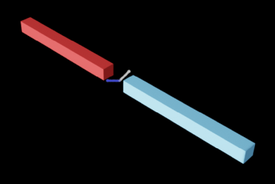
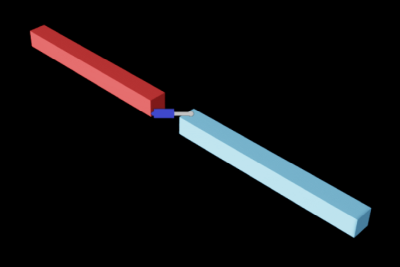

Joints#
Joints govern the relative motion of pairs of rigid bodies — for example a hinge that lets a door swing but otherwise holds it fixed to its frame. A joint couples a dynamic rigid body to another dynamic body, a kinematic body, or a static coordinate frame.
If both jointed bodies belong to the same articulation, the joint becomes an articulation joint, which is more restrictive but more precise — refer to Articulations. This page covers regular joints and the concepts (frames, drives, limits) shared by both.
Joint types and drive/limit APIs (UsdPhysics.Joint, DriveAPI, LimitAPI) are
core UsdPhysics and work with stock usd-core. PhysX-specific extensions
(PhysxLimitAPI, gear/rack-and-pinion, mimic, tendons) are codeless — see
Physics Schemas.
Joint Frames#
A joint references two bodies, body0 and body1, with world poses G_0 and
G_1. It associates a local pose with each body, L_0 and L_1 (constant,
never modified by the simulation), and develops a pose J from its position
along and rotation around the three axes. Every joint enforces:
[ G_0 \cdot L_0 \cdot J = G_1 \cdot L_1 ]
If the joint connects to a static frame, the corresponding G is constant. The
solver produces body and joint velocities that satisfy this equation while
enforcing the rule each joint type places on the form of J. For example, a
fixed joint permits only the identity J; a prismatic joint allows non-zero
position along a single axis with identity rotation; a revolute joint allows only
rotation about a single axis.
Local frames are authored with localPos0/localRot0/localPos1/localRot1 on
the joint:
from pxr import Sdf, UsdPhysics, Gf
joint = UsdPhysics.Joint.Define(stage, "/World/joint")
joint.CreateBody0Rel().SetTargets([Sdf.Path("/World/rigidBody0")])
joint.CreateBody1Rel().SetTargets([Sdf.Path("/World/rigidBody1")])
joint.CreateLocalPos0Attr().Set(Gf.Vec3f(0.0, 10.0, 0.0))
joint.CreateLocalRot0Attr().Set(Gf.Quatf(1.0))
joint.CreateLocalPos1Attr().Set(Gf.Vec3f(0.0, 0.0, 0.0))
joint.CreateLocalRot1Attr().Set(Gf.Quatf(1.0))
Joint Drive#
A joint drive applies a force to reach a target position and/or velocity, following a PD-controller spring model:
[ driveForce = stiffness \cdot (position - targetPosition) + damping \cdot (velocity - targetVelocity) ]
Pure position drive: non-zero stiffness, zero damping.
Pure velocity drive: zero stiffness, non-zero damping.
Damped harmonic motion: both non-zero with a zero target velocity.
Drives are authored per axis with UsdPhysics.DriveAPI and can be force or
acceleration drives (acceleration drives behave as if the body had unit
mass):
from pxr import UsdPhysics
drive = UsdPhysics.DriveAPI.Apply(joint_prim, UsdPhysics.Tokens.angular)
drive.CreateTypeAttr(UsdPhysics.Tokens.force) # or acceleration
drive.CreateStiffnessAttr(0.0)
drive.CreateDampingAttr(100.0)
drive.CreateTargetVelocityAttr(200.0)
drive.CreateTargetPositionAttr(0.0)
A drive is not guaranteed to reach its target unless its stiffness/damping dominate the other forces acting on the body, and limits take priority over drives.
For articulations, drive targets, stiffness, damping, and the drive model are
read and written in bulk at runtime through the ARTICULATION_DOF_* tensor types
— refer to the Tensor Bindings reference.
Joint Limits#
Limits impose lower/upper bounds on a joint’s angular or linear motion, applied
to the joint pose J. Author them per axis with UsdPhysics.LimitAPI, or with
the type-specific lowerLimit/upperLimit attributes on revolute/prismatic
joints. Setting the lower limit above the upper limit locks that axis.
PhysxLimitAPI (codeless) extends a limit with restitution/bounce or with soft
(spring) behavior:
from pxr import Sdf
joint_prim.ApplyAPI("PhysxLimitAPI", "transY") # instance name = axis
joint_prim.CreateAttribute("physxLimit:transY:restitution", Sdf.ValueTypeNames.Float).Set(1.0)
Disabling Joints#
Remove the joint prim from the stage, or set a break force so the joint is
permanently disabled once it exerts more than a threshold force
(physics:breakForce / physics:breakTorque on UsdPhysics.Joint).
Break force is ignored for articulation joints, and articulation joints cannot be removed at runtime — refer to Articulations.
Joint Types#
Type |
Description |
Regular (cpu/gpu) |
Articulation (cpu/gpu) |
|---|---|---|---|
D6 |
Configurable free/limited/locked per axis (up to 3 translational + 3 rotational) |
yes/yes |
yes/yes (linear axes must be locked) |
Distance |
Limits distance between the two bodies |
yes/no |
no/no |
Fixed |
No relative motion |
yes/yes |
yes/yes |
Prismatic |
Linear motion along one axis |
yes/yes |
yes/yes |
Revolute |
Rotation about one axis |
yes/yes |
yes/yes |
Spherical |
Rotation about three axes (ball-and-socket) |
yes/yes |
yes/yes |


Each concrete type has its own UsdPhysics schema — UsdPhysics.RevoluteJoint,
PrismaticJoint, FixedJoint, SphericalJoint, DistanceJoint, and the generic
Joint (D6). A representative revolute joint with a velocity drive and limits:
from pxr import Sdf, UsdPhysics
revolute = UsdPhysics.RevoluteJoint.Define(stage, "/World/revoluteJoint")
revolute.CreateBody0Rel().SetTargets([Sdf.Path("/World/rigidBody0")])
revolute.CreateBody1Rel().SetTargets([Sdf.Path("/World/rigidBody1")])
revolute.CreateAxisAttr(UsdPhysics.Tokens.y)
revolute.CreateLowerLimitAttr(-90.0)
revolute.CreateUpperLimitAttr(90.0)
drive = UsdPhysics.DriveAPI.Apply(revolute.GetPrim(), UsdPhysics.Tokens.angular)
drive.CreateTypeAttr(UsdPhysics.Tokens.force)
drive.CreateDampingAttr(100.0)
drive.CreateTargetVelocityAttr(200.0)
Type-specific notes:
D6 — lock/limit/free each axis through
LimitAPIper axis token (transX/rotX/…). Angular limits form a pyramid, not a cone. For angular drives, use the same stiffness/damping for therotYandrotZaxes (mixing differs is undefined);rotXmay differ. Supports adistancelimit (upper bound only).Distance — set
minDistanceand/ormaxDistance; either alone is valid. A soft-constraint spring is available throughPhysxPhysicsDistanceJointAPI.Prismatic / Revolute — single-axis linear / angular motion; both support drives and
lowerLimit/upperLimit.Spherical — a cone limit around a chosen principal axis through
coneAngle0Limit/coneAngle1Limit. No drive; motion around the principal axis cannot be limited; soft limits are unsupported. When these limits bite, prefer a D6 joint with locked linear axes.
Meta Joints#
Meta joints couple two other joints:
Gear joint (
PhysxPhysicsGearJoint) couples two revolute joints by a gear ratio:|w1| = |w0| * R.Rack-and-pinion joint (
PhysxPhysicsRackAndPinionJoint) couples a revolute joint to a prismatic joint by a ratio:|w| = |V| * R.
Both reference their two source joints (hinge0/hinge1, or hinge/prismatic)
and are defined by prim type with codeless schemas:
gear = stage.DefinePrim("/World/gearJoint", "PhysxPhysicsGearJoint")
gear.CreateRelationship("physics:body0").SetTargets(["/World/gear0"])
gear.CreateRelationship("physics:body1").SetTargets(["/World/gear1"])
gear.CreateRelationship("physxGearJoint:hinge0").SetTargets(["/World/revoluteJoint0"])
gear.CreateRelationship("physxGearJoint:hinge1").SetTargets(["/World/revoluteJoint1"])
Gear and rack-and-pinion joints are CPU-only (they run through the CPU pipeline even in GPU simulation). For articulations, prefer mimic joints, which implement the same coupling with native GPU acceleration.
PhysX Joint Schema#
The codeless PhysX Schema provides PhysxJointAxisAPI (per-axis
armature, friction, max joint velocity) and PhysxDrivePerformanceEnvelopeAPI
(actuator performance limits). These only apply to joints that are part of an
articulation and are covered in
Articulations.
Joint Instancing#
PhysxPhysicsJointInstancer (codeless) is the counterpart to rigid-body point
instancing: it instances joints between point-instanced bodies. Instanced joints
may reference only point-instanced bodies, scenegraph instancing is not supported
for joints, and joint instancing is not supported for articulation joints. Refer to
Rigid Body instancing.